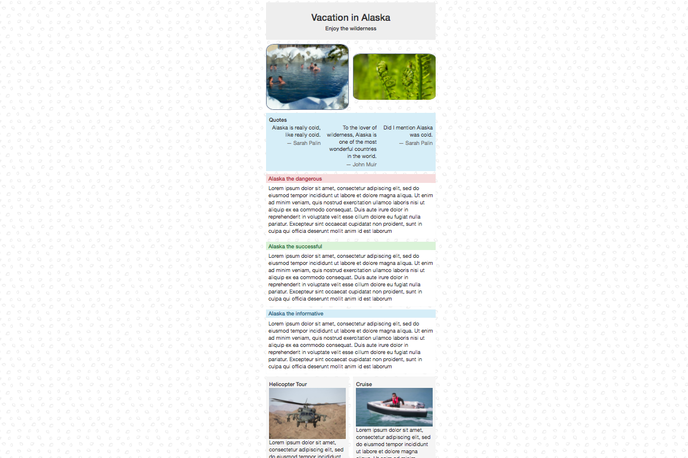

Rita Bennett-Chew
A current student at Epicodus
About Rita

Background
Rita is currently a North Carolinian studying web development at Epicodus in Portland.
Interests
Rita enjoys these activities:
- Contra Dancing
- Playing with Dogs
- Sewing and Knitting
- Lounging in Hammocks
- Making Cakes
Skills
- HTML
- CSS
- Boostrap
- Git and GitHub
- WordPress
Experience
- CORe Investigative Solutions, Public Records Research Team Lead
- CriminalRecordCheck.com, Licensing Researcher
Projects
Wikipedia Clone
Created by Kevin Ahn and Rita Bennett-Chew
A clone of the Wikipedia home page
Skills Utilitized:
- HTML
- CSS, including Boostrap
Vacation to Alaska Site
Created by Kevin Ahn and Rita Bennett-Chew
A site advertising an Alaska vacation
Skills Utilitized:
- HTML
- CSS, including Boostrap
A Rock Band and an Interior Decorator
Created by Kelli McCloskey and Rita Bennett-Chew
A site for a band and an interior decorator

Skills Utilitized:
- HTML
- CSS, including box model and floats
FernView
Created by Devin Mounts and Rita Bennett-Chew
A site for the intentional community FernView


Skills Utilitized:
- HTML
- CSS